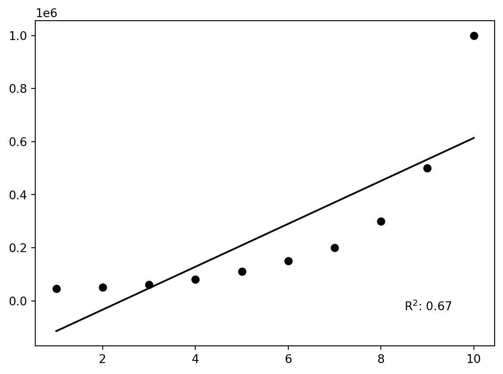
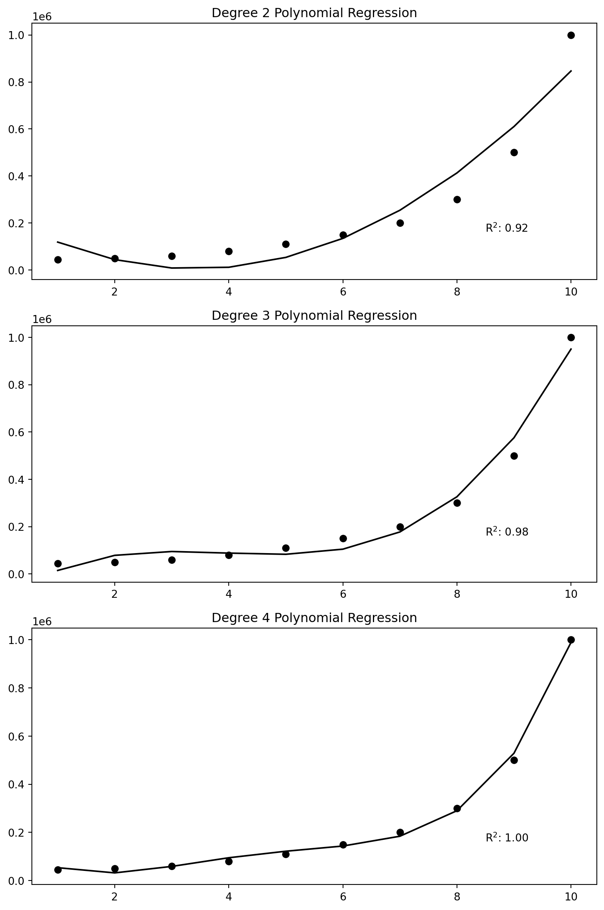
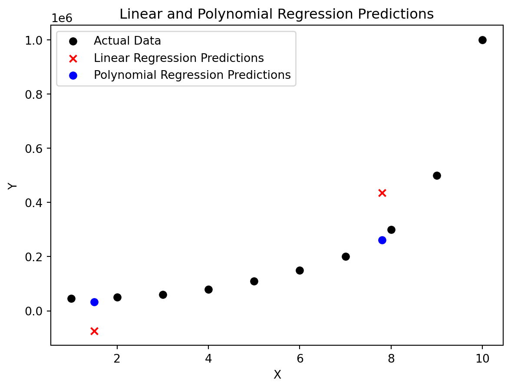

Code
import pandas as pd
import numpy as np
import matplotlib.pyplot as pltManoj Subedi
February 18, 2024
Welcome to a hands-on exploration of solving a regression problem using polynomial regression. In this scenario, we’re dealing with a classic machine learning problem – predicting salaries based on job levels. The dataset includes information about hypothetical job positions and corresponding salaries.
Problem Statement: The goal here is to build a regression model that accurately predicts salaries. Initially, we attempt a simple linear regression model. However, if the relationship between job levels and salaries is more complex than a straight line, we need a model that can capture these nuances.
| Position | Level | Salary | |
|---|---|---|---|
| 0 | Business Analyst | 1 | 45000 |
| 1 | Junior Consultant | 2 | 50000 |
| 2 | Senior Consultant | 3 | 60000 |
| 3 | Manager | 4 | 80000 |
| 4 | Country Manager | 5 | 110000 |
| 5 | Region Manager | 6 | 150000 |
| 6 | Partner | 7 | 200000 |
| 7 | Senior Partner | 8 | 300000 |
| 8 | C-level | 9 | 500000 |
| 9 | CEO | 10 | 1000000 |
Before diving into modeling, it’s crucial to understand the data. The scatter plot visualizes the relationship between job levels and salaries, offering insights into the potential complexity of the underlying patterns.
To start, we apply a simple linear regression model, assuming a linear relationship between job levels and salaries. The model aims to minimize the difference between actual and predicted salaries.
LinearRegression()In a Jupyter environment, please rerun this cell to show the HTML representation or trust the notebook.
LinearRegression()
We evaluate the performance of the linear regression model using the R-squared metric. A low R-squared value may suggest that a linear model is insufficient for capturing the relationship in the data.
y_pred = lin_reg.predict(X)
def r2(y, y_pred):
tss=0
rss=0
mean_true = sum(y) / len(y)
for true, pred in zip(y, y_pred):
tss+=(true-mean_true)**2
rss+=(true-pred)**2
return 1 - (rss / tss)
r_sq = r2(y, y_pred)
plt.scatter(df.Level, df.Salary, color='black')
plt.plot(X, lin_reg.predict(X), color='black')
plt.text(8.5, 0.75, rf'R$^2$: {r_sq:.2f}', fontsize=10, verticalalignment='top')Text(8.5, 0.75, 'R$^2$: 0.67')
Recognizing potential non-linearity, we explore polynomial regression. By transforming our feature variable with different degrees, we can model curved relationships beyond what linear regression allows. We evaluate each polynomial regression model, emphasizing the importance of selecting the right degree for the polynomial features. This process allows us to uncover more complex relationships in the data.
from sklearn.preprocessing import PolynomialFeatures
fig, axs = plt.subplots(3, 1, figsize=(8, 12))
# polynomial regression plots with different degrees
for degree, ax in zip([2, 3, 4], axs):
# Polynomial features
poly_feat = PolynomialFeatures(degree=degree)
X_poly = poly_feat.fit_transform(X)
# Linear regression
linreg_for_polyreg = LinearRegression()
linreg_for_polyreg.fit(X_poly, y)
# Predicted y values
y_poly_pred = linreg_for_polyreg.predict(X_poly)
# Plot
ax.scatter(X, y, color='black')
ax.plot(X, y_poly_pred, color='black')
r_sq=r2(y, y_poly_pred)
ax.set_title(f'Degree {degree} Polynomial Regression')
ax.text(8.5, 0.2e6, rf'R$^2$: {r_sq:.2f}', fontsize=10, verticalalignment='top')
plt.tight_layout()
plt.show()
To conclude, we compare predictions from both linear and polynomial regression models. This not only demonstrates the flexibility of polynomial regression but also highlights the importance of selecting the appropriate model for a given problem.
x_test=[1.5, 7.8]
#plotting the predicted points
plt.scatter(X, y, label='Actual Data', color='black')
plt.scatter(x_test, lin_reg.predict([[1.5], [7.8]]), label='Linear Regression Predictions', marker='x', color='red')
plt.scatter(x_test, linreg_for_polyreg.predict(poly_feat.fit_transform([[1.5],[7.8]])), label='Polynomial Regression Predictions', marker='o', color='blue')
plt.title('Linear and Polynomial Regression Predictions')
plt.xlabel('X')
plt.ylabel('Y')
plt.legend()
plt.show()
---
title: 'Regression: tweaking model parameter'
author:
- name: Manoj Subedi
url: https://man0ZZZ.github.io
date: now
categories:
- code
- regression
format:
html:
mermaid:
theme: default
output-file: index.html
jupyter:
jupytext:
formats: 'qmd:quarto,ipynb'
text_representation:
extension: .qmd
format_name: quarto
format_version: '1.0'
jupytext_version: 1.15.2
kernelspec:
display_name: Python 3 (ipykernel)
language: python
name: python3
---
# Introduction
Welcome to a hands-on exploration of solving a regression problem using polynomial regression. In this scenario, we're dealing with a classic machine learning problem -- predicting salaries based on job levels. The dataset includes information about hypothetical job positions and corresponding salaries.
Problem Statement: The goal here is to build a regression model that accurately predicts salaries. Initially, we attempt a simple linear regression model. However, if the relationship between job levels and salaries is more complex than a straight line, we need a model that can capture these nuances.
```{python}
import pandas as pd
import numpy as np
import matplotlib.pyplot as plt
```
```{python}
#| echo: false
df = pd.DataFrame(pd.read_csv('./Position_Salaries.csv'))
df
```
# Exploratory Data Analysis:
Before diving into modeling, it's crucial to understand the data. The scatter plot visualizes the relationship between job levels and salaries, offering insights into the potential complexity of the underlying patterns.
```{python}
plt.scatter(df['Level'], df['Salary'])
plt.xlabel("Level")
plt.ylabel("Salary")
```
# Linear Regression:
To start, we apply a simple linear regression model, assuming a linear relationship between job levels and salaries. The model aims to minimize the difference between actual and predicted salaries.
```{python}
#fit linear regression
from sklearn.linear_model import LinearRegression
y=df.iloc[:,-1].values
X=df.iloc[:,-2:-1].values
lin_reg=LinearRegression()
lin_reg.fit(X,y)
```
# Model evaluation:
We evaluate the performance of the linear regression model using the R-squared metric. A low R-squared value may suggest that a linear model is insufficient for capturing the relationship in the data.
```{python}
y_pred = lin_reg.predict(X)
def r2(y, y_pred):
tss=0
rss=0
mean_true = sum(y) / len(y)
for true, pred in zip(y, y_pred):
tss+=(true-mean_true)**2
rss+=(true-pred)**2
return 1 - (rss / tss)
r_sq = r2(y, y_pred)
plt.scatter(df.Level, df.Salary, color='black')
plt.plot(X, lin_reg.predict(X), color='black')
plt.text(8.5, 0.75, rf'R$^2$: {r_sq:.2f}', fontsize=10, verticalalignment='top')
```
# Polynomial Regression and model evaluation:
Recognizing potential non-linearity, we explore polynomial regression. By transforming our feature variable with different degrees, we can model curved relationships beyond what linear regression allows. We evaluate each polynomial regression model, emphasizing the importance of selecting the right degree for the polynomial features. This process allows us to uncover more complex relationships in the data.
```{python}
from sklearn.preprocessing import PolynomialFeatures
fig, axs = plt.subplots(3, 1, figsize=(8, 12))
# polynomial regression plots with different degrees
for degree, ax in zip([2, 3, 4], axs):
# Polynomial features
poly_feat = PolynomialFeatures(degree=degree)
X_poly = poly_feat.fit_transform(X)
# Linear regression
linreg_for_polyreg = LinearRegression()
linreg_for_polyreg.fit(X_poly, y)
# Predicted y values
y_poly_pred = linreg_for_polyreg.predict(X_poly)
# Plot
ax.scatter(X, y, color='black')
ax.plot(X, y_poly_pred, color='black')
r_sq=r2(y, y_poly_pred)
ax.set_title(f'Degree {degree} Polynomial Regression')
ax.text(8.5, 0.2e6, rf'R$^2$: {r_sq:.2f}', fontsize=10, verticalalignment='top')
plt.tight_layout()
plt.show()
```
# Predictions and Plotting:
To conclude, we compare predictions from both linear and polynomial regression models. This not only demonstrates the flexibility of polynomial regression but also highlights the importance of selecting the appropriate model for a given problem.
```{python}
x_test=[1.5, 7.8]
#plotting the predicted points
plt.scatter(X, y, label='Actual Data', color='black')
plt.scatter(x_test, lin_reg.predict([[1.5], [7.8]]), label='Linear Regression Predictions', marker='x', color='red')
plt.scatter(x_test, linreg_for_polyreg.predict(poly_feat.fit_transform([[1.5],[7.8]])), label='Polynomial Regression Predictions', marker='o', color='blue')
plt.title('Linear and Polynomial Regression Predictions')
plt.xlabel('X')
plt.ylabel('Y')
plt.legend()
plt.show()
```